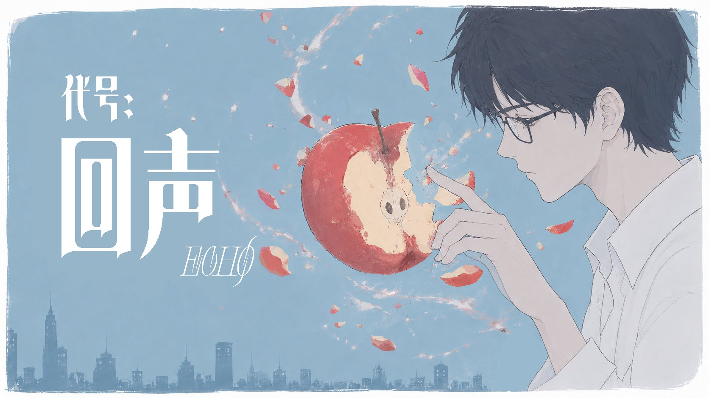

游戏经历
游戏经历与分析
涵盖开放世界、模拟经营、叙事、女性向、FPS、竞速等6大类型共11款经典游戏的深度分析。每款游戏从设计理念、核心机制、玩家体验等维度进行专业解读。
涵盖开放世界、模拟经营、叙事、女性向、FPS、竞速等6大类型共11款经典游戏的深度分析。每款游戏从设计理念、核心机制、玩家体验等维度进行专业解读。

游戏 Demo一款治愈系 2D 叙事解谜游戏，采用 Godot 4.6 引擎开发。核心体验围绕"双时空压力转化循环"展开，通过 AI NPC 系统、双线叙事（现实/梦境）和独特的"回声"机制，为玩家提供情感治愈的体验。重点展示 NPC 人设演进系统与 AI 对话架构设计。
深度分析网易开放世界武侠游戏《燕云十六声》的 NPC 系统、AI 玩法与网状叙事设计。涵盖 AI NPC 对话系统、团本 AI 队友、自动战斗 AI、奇遇系统、残章系统等多个维度，探讨 AI 技术如何赋能武侠游戏体验。
全面剖析任天堂社交模拟游戏《Tomodachi Life》的 NPC 系统与 AI 玩法设计。涵盖 Mii 创建系统、16 种人格类型、8 阶段关系系统、三层 AI 架构、梦想系统、整活生态等内容，并与《模拟人生4》进行多维度对比分析。
深度体验并分析过多款不同类型游戏，从中学习游戏设计理念与玩家体验。以下是部分游戏经历：